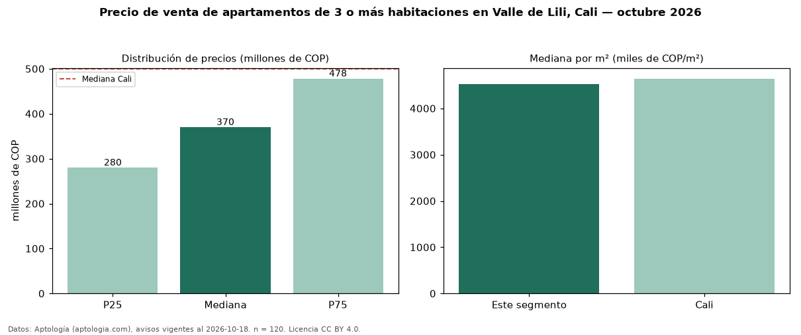

Precio de venta de apartamentos de 3 o más habitaciones en Valle de Lili, Cali — octubre 2026
Con 120 avisos vigentes, el precio mediano de apartamentos de 3 o más habitaciones en venta en Valle de Lili, Cali es COP 370 millones. Eso es 26 % por debajo de la mediana de Cali para apartamentos de 3 o más habitaciones (COP 500 millones). Por metro cuadrado, la mediana es COP 4,53 millones/m² (n = 120 avisos con área), 2 % por debajo de Cali (COP 4,64 millones/m²). Son 73 % de los 165 avisos de apartamentos en venta de la zona, cuya mediana general es COP 357 millones (+4 %). El área mediana anunciada es 80 m². La administración mediana declarada es COP 355.000 al mes (n = 105). El estrato más frecuente es 5 (54 % de los avisos con estrato). La mitad central de los avisos va de COP 280 millones a COP 478 millones (razón 1,7), una dispersión moderada. Datos: Aptología (aptologia.com), CC BY 4.0 — https://www.aptologia.com/venta/cali/valle-de-lili. Archivos: PDF, CSV con las cifras y gráfica PNG.

| Avisos únicos | 120 |
|---|---|
| Percentil 25 | COP 280.000.000 |
| Mediana | COP 370.000.000 |
| Percentil 75 | COP 478.000.000 |
| Mediana por m² | COP 4.530.330 |
Fuente: avisos vigentes de portales inmobiliarios recopilados por Aptología, deduplicados (mínimo 30 avisos únicos por celda). Precios pedidos, no cerrados. Fecha: 2026-10-18.